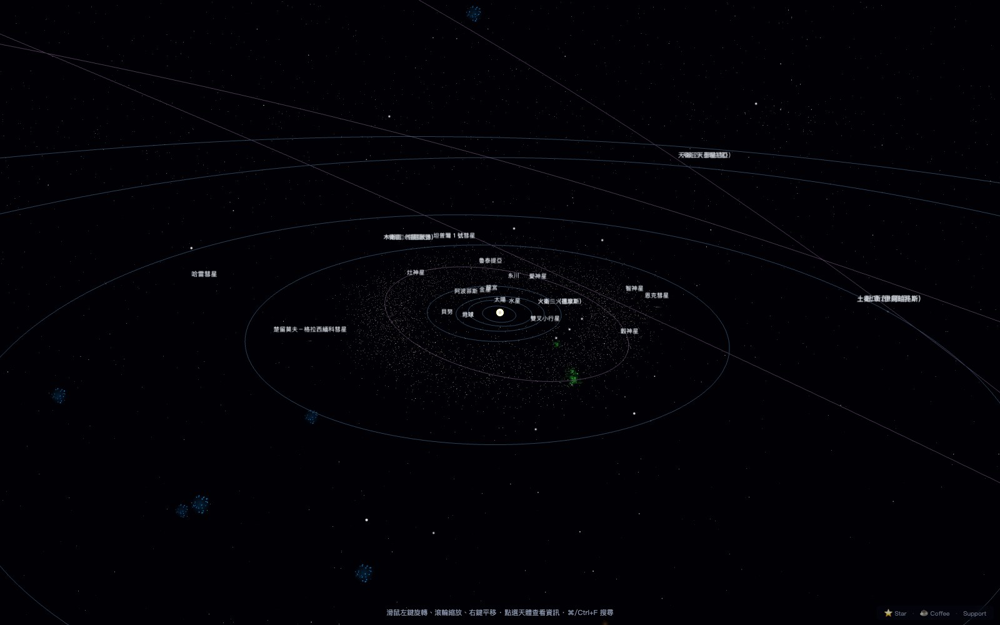

Solar System 3D
Browser-based 3D astronomy simulator · v0.9.0
Real NASA J2000 orbital mechanics — a Newton-Raphson Kepler solver, plus an optional Yoshida-4 symplectic N-body integrator. Three viewing tiers (solar system → 50 ly neighbourhood → galactic disc) with seamless transitions. Observer mode renders the sky with Hosek-Wilkie atmospheric scattering, applies stellar proper motion + annual aberration, and computes magnetic declination so the AR gyro compass shows true north. Telescope bridge for INDI / ASCOM mounts.
Three.jsTypeScriptViteWebGL2390 tests · MIT